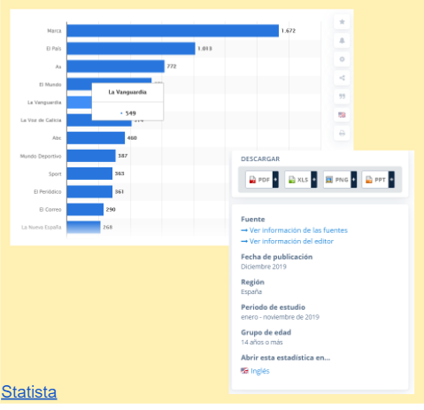

Se nos planteo como desafió rediseñar el software de Beeok, esta es una herramienta de legislación ambiental que permite realizar evaluaciones e identificar las normativas en cumplimiento legal.

A traves de entrevistas y testeos se identificaron los principales problemas de la plataforma, dando como resultados problemas de accesibilidad.

Se realizó un análisis de competencia y se definieron user personas y journey map.
Luego de esta fase, se realizo la etapa de síntesis e ideación, donde se determinaron que no existian insigth, pero si se generaron muchos aprendizajes que nos permitieron plantear una solución mediante ideas y propuestas.

Luego se definió la guia de estilo y componentes para asi poder realizar una propuesta con un diseño moderno y adaptado al usuario de este gremio.

La Nueva propuesta diseñada para los usuarios les permitirá poder exportar las tablas en diferentes formatos, ademas de rediseñar el menú principal y el sistema de busqueda que a través de testeos reflejó que era la gran oportunidad de mejora del Sofware.